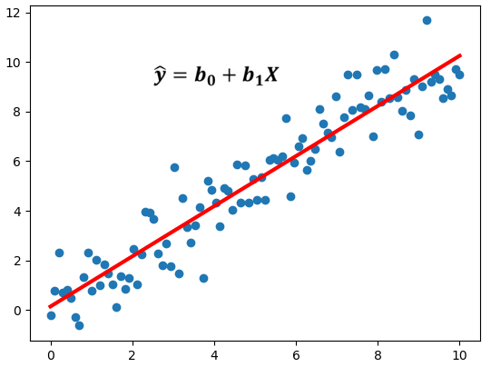

PROGRESIONES Y REGRESIONES
REGRESIÓN
El análisis de la regresión es un proceso estadístico para estimar las relaciones entre variables. Incluye muchas técnicas para el modelado y análisis de diversas variables, cuando la atención se centra en la relación entre una variable dependiente y una o más variables independientes (o predictoras)
La ecuación de regresión lineal simple indica que el valor medio o valor esperado de y es una función lineal de x: E(y/x) = β0 + β1 x. Si β1=0 entonces E(y/x) = β0 y en este caso el valor medio no depende del valor de x, y concluimos que x y y no tienen relación lineal.
PROGRESIÓN
En matemáticas, una progresión aritmética es una sucesión de números tales que la diferencia de cualquier par de términos sucesivos de la secuencia es constante, dicha cantidad llamada diferencia de la progresión,diferencia o incluso distancia.
Como se realiza una progresión:
1. Establecer los valores y para encontrar el término general
2. Establecer para encontrar la suma de los términos.
3. Establecer un valor cualquiera y para encontrar el término general
4. Establecer para encontrar la suma de los términos.
5. Establecer los valores cualesquiera y para encontrar el término general
6. Establecer para encontrar la suma de los términos.